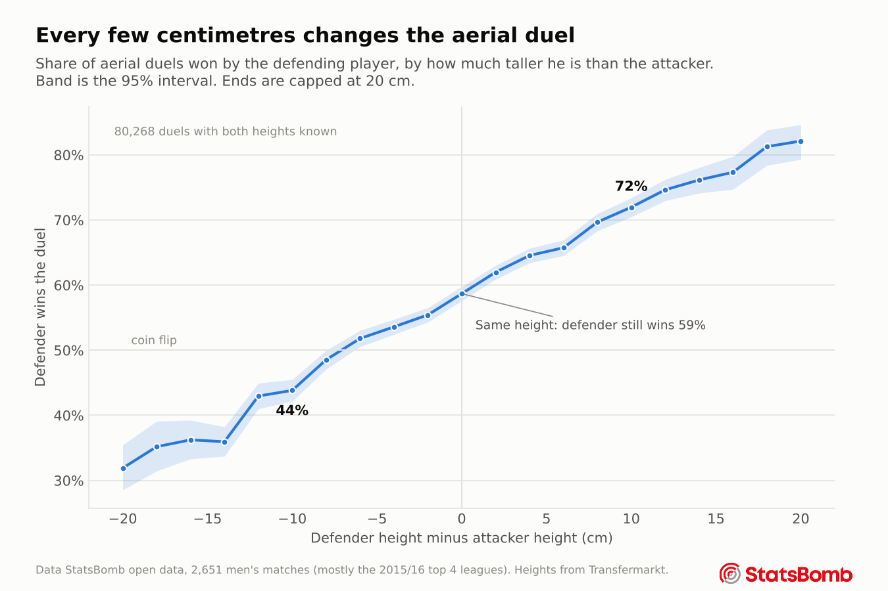
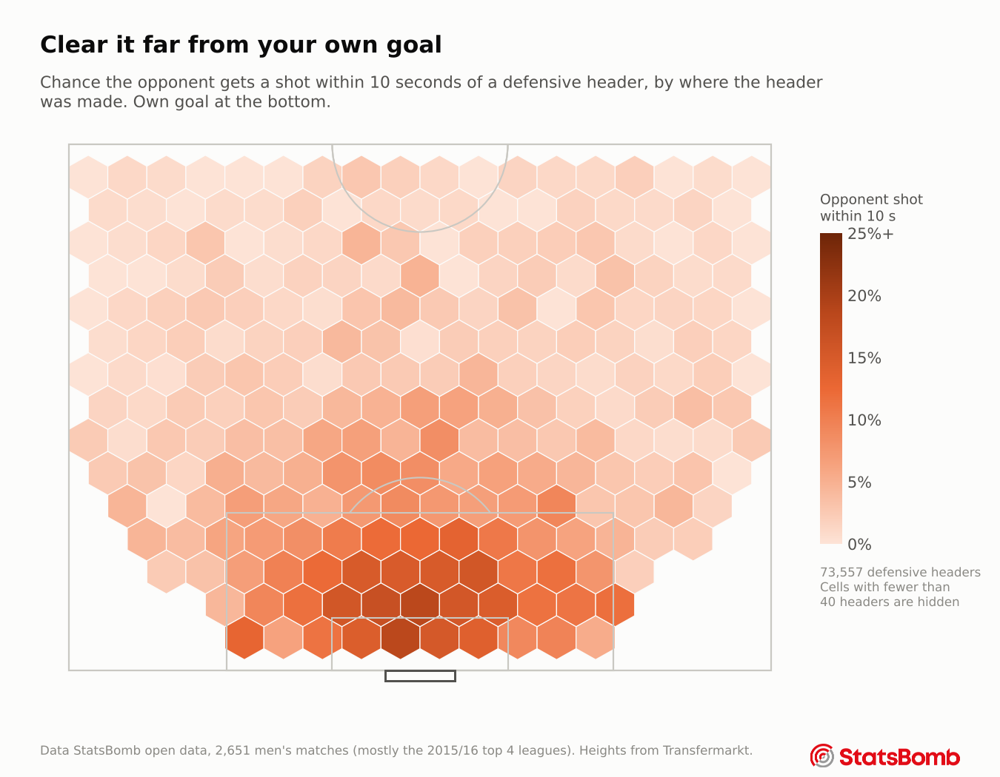
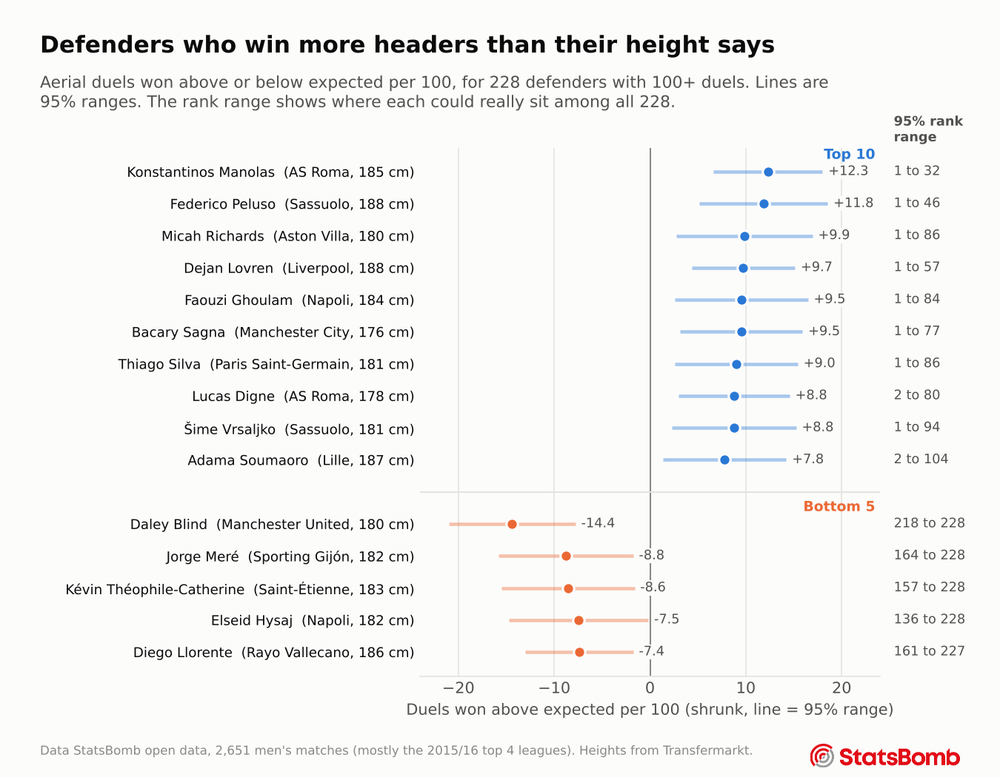

Chapter 3
Defensive headers
Who wins aerial duels, and what makes a defensive header actually safe?
Height comes first
StatsBomb records the loser of every aerial duel and links him to the winner, so both players and both heights are known. That makes it possible to ask the simplest question directly.

When the defender is more than 10 cm shorter than the attacker he wins 39% of duels. When he is more than 10 cm taller he wins 76%. Even at the same height the defending player wins 59%. The data does not say why, but a likely reason is that defenders usually face the ball as it arrives while attackers often have to turn or run onto it.
What decides a duel
A model trained on 93,684 duels and tested on matches it had not seen was asked how much it relies on each kind of information. The method is simple. Shuffle one kind of information at random so it no longer matches the duels, and measure how much worse the predictions get. Inputs that overlap, like the two players' heights and the difference between them, are shuffled together, and the test is repeated 15 times across different held out matches.
| What was shuffled | Share of the model's accuracy | Range over 15 tests |
|---|---|---|
| Height of both players and the difference | 30% | 26% to 35% |
| Where the duel happens | 17% | 14% to 19% |
| Where the delivery started | 16% | 11% to 19% |
| Positions of the two players | 14% | 12% to 18% |
| Type and flight of the delivery | 12% | 10% to 15% |
| Phase of play, such as a goal kick or a corner | 10% | 8% to 12% |
Height came first in all 15 tests. An earlier version of this page called height the third biggest factor, because it shuffled the height difference on its own while the model could still see both raw heights. The Method page shows both versions.
Adding height lifted the model's accuracy (AUC) from 0.643 to 0.667. Both versions were scored on the same resampled matches, so the uncertainty is measured on the gain itself. The gain is 0.024 with a 95% interval of 0.021 to 0.026, and in none of the 1,000 resamples did height fail to help. That sounds small, but duels are close to a coin flip by nature, so any reliable edge matters. The model still leaves plenty unexplained, and part of that gap is individual skill, which chapter 4 measures.
Where you clear it matters most
A good defensive header does more than win the ball. It has to stop the opponent from getting a shot soon after. For 75,968 defensive headers, the model looks at whether the other team shot within 10 seconds.

A header made inside your own box is followed by an opponent shot 14% of the time. Outside the box it is under 3%. Distance from goal explains about three quarters of what this model knows. The defender himself seems to matter much less, since how often a player's clearances avoid danger barely repeats from one set of matches to the next.
Keeping the ball
After a defensive header, the defending team wins the next ball 45% of the time. One trap was avoided here. StatsBomb tends to record a header as a pass when it reaches a teammate and as a clearance when it does not, so using that label would have quietly given the model the answer. It was left out.
Who is good in the air
Once the model knows the height of both players, the delivery, the location and the positions, any player who still wins more duels than expected is doing something the situation does not explain.
